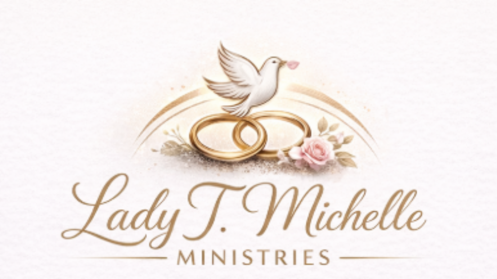

Strengthening Marriages Through Faith, Healing, and Intentional Growth
“A cord of three strands is not quickly broken.” — Ecclesiastes 4:12
Week 6 Blog
Marriage is not sustained by emotions alone — it’s strengthened by covenant. When you choose commitment daily, you create an environment where love can mature, trust can rebuild, and unity can grow.
Ecclesiastes 4:12 reminds us that when God is included in the marriage, a “three-strand cord” becomes strong and unbreakable. A strong marriage is not two people doing it alone — it’s two people surrendering to God together.
Take a quiet moment together and say:
“Today, I choose you again. I choose love, patience, and faith.
And I choose to keep God at the center of our covenant.”
Lord, strengthen our covenant. Teach us to love with endurance, forgive with grace, and stay united through every season. Be the center of our home and our hearts. Amen.